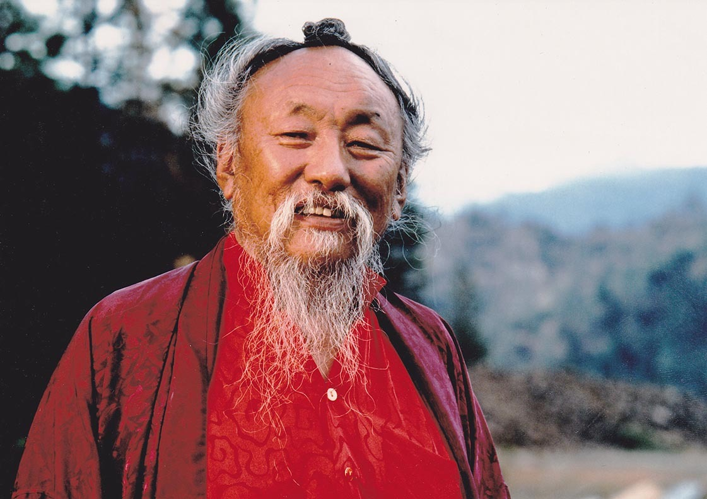

Tara: mother of all buddhas
Tara (Sanskrit: तारा, tārā; Tib. སྒྲོལ་མ, Dölma), Ārya Tārā, or Shayama Tara, also known as Jetsun Dölma (Tibetan language: rje btsun sgrol ma) is an important figure in Buddhism, especially revered in Tibetan Buddhism.
She appears as a female bodhisattva in Mahayana Buddhism, and as a female Buddha in Vajrayana Buddhism. She is known as the "mother of liberation", and represents the virtues of success in work and achievements. She is known as Duōluó Púsà (多羅菩薩) in Chinese Buddhism, and as Tara Bosatsu (多羅菩薩) in Japan.
Tārā is a meditation deity revered by practitioners of the Tibetan branch of Vajrayana Buddhism to develop certain inner qualities and to understand outer, inner and secret teachings such as karuṇā (compassion), mettā (loving-kindness), and shunyata (emptiness).
Tārā may more properly be understood as different aspects of the same quality, as bodhisattvas are often considered personifications of Buddhist methods.
There is also recognition in some schools of Buddhism of twenty-one Tārās. A practice text entitled Praises to the Twenty-One Taras, is the most important text on Tara in Tibetan Buddhism.
Another key text is the Tantra Which is the Source for All the Functions of Tara, Mother of All the Tathagatas.
The main Tārā mantra is the same for Buddhists and Hindus alike: oṃ tāre tuttāre ture svāhā. It is pronounced by Tibetans and Buddhists who follow the Tibetan traditions as oṃ tāre tu tāre ture soha. The literal translation would be "Oṃ O Tārā, I pray O Tārā, O Swift One, So Be It!"
Red Tara

Tara is a very important figure in Tibetan Buddhism. She is known as the ‘saviouress’ and is also considered the embodiment of the activity of all the Buddhas.
According to the Tara Tantras, she was a young Bodhisattva princess who inhabited a different world system in a distant past. Her name was Yeshe Dawa and she had deep faith in the Buddha of that world system and made tremendous amounts of offerings to him. She also went to receive teachings and engaged in deep meditations as well. At one time, she received a special teaching on the development of Bodhicitta – the infinitely compassionate mental state of a Bodhisattva. After the teachings, some monks approached her and suggested that because of her level of attainment she should next pray to be reborn as a male to progress further in her next life.
She contemplated their words and told the monks that it is only the “ignorant minded” who would see gender as a barrier to attaining enlightenment. Nevertheless, she realised that there have been few who have developed the aspiration to work for the welfare of sentient beings in a female form. Therefore, she made the aspiration to be reborn in a female form, again and again, to work tirelessly to liberate all beings until samsara is emptied.
She then remained in a state of meditation and perceiving her supreme aspiration, the Buddha prophesied that she would manifest enlightenment and be known as the Goddess Tara.
Red Tara is a particularly popular form of Tara, whose practice emphasises the activity of control and magnetism. Red Tara is also known as Kurukulle or Rigjema and she has the supreme ability to attract people, resources and circumstances for our Dharma practice to flourish.
Her practice also allows one to have the special ability to influence others positively especially in relations to pacifying the mind and bringing them to the Dharma.
Deity: Arya Tara (Sanskrit) Alternative names: Green Tara (English); Shyama Tara (Sanskrit); Drolma (Tibetan); Droljang (Tibetan) In the ancient text known as the Praise to the 21 Taras, Tara is said to have emanated in 21 main forms.
The most popular of these forms are the Green and White Taras. Green Tara is considered the main emanation and associated mainly with enlightened activity and protection, and White Tara is associated with the pacification of inner and outer illnesses.
She is known to have been particularly close to a large number of great Indian and Tibetan masters like Atisha, Shakya Shri Bhadra and so forth.
With her right leg extended in her ever-readiness to assist, Tara is known for swift action and manifests many miracles through her sacred images in both India and Tibet. Deity: Dorje Shugden (Tibetan) Alternative name: Vajra Rudra (Sanskrit) Dorje Shugden is an emanation of the Buddha of Wisdom, Manjushri. He took the form of a Dharma Protector in order to safeguard the Buddha’s teachings, especially the important teachings on the Middle Way View.
Reminiscent of Manjushri’s form, Dorje Shugden carries a meandering sword and rides a snowlion that represents the fearlessness of a fully enlightened Buddha.
Thus, he has great strength to overcome obstacles of the body, speech and mind, and create suitable conditions for our spiritual practice to flourish. Furthermore, he carries a jewel-spitting mongoose and a vajra hook to symbolise that he has the tremendous ability to bestow wealth and resources.
Chagdud Tulku Rinpoche
H.E. Chagdud Tulku Rinpoche (1930-2002) belongs to the last generation of teachers to have been fully trained in Tibet in the vast wealth of Vajrayana teachings and methods. He held superb teaching lineages, primarily in the Nyingma tradition of Tibetan Vajrayana, which he taught unceasingly throughout his life. The main emphasis in whatever he taught was pure motivation.
After the Communist conquest of Tibet in 1959, Rinpoche went into exile in India and Nepal. During the next twenty years, in various refugee camps and settlements, Rinpoche served as lama who administered to the refugees’ spiritual needs, as a camp leader who organized work projects, and as a physician Tibetan medicine.
Rinpoche traveled to the United States in 1979. The combination of his warm personality, his depth of knowledge, and his meditative realization magnetized thousands of students. His tireless teachings led him to Europe, Russia, Korea, Hong Kong, Australia, and South America.
He resettled in Brazil in 1995 after successfully establishing numerous centers and meditation groups in the United States and other places. In order to maintain his lineage teachings, he ordained a number of his Western students as teachers and gave them specific authorizations to teach. Since Rinpoche's Parinirvana on November 17, 2002, the extensive Brazilian network of centers—many with their own resident lamas—and meditation groups have been under the spiritual direction of Chagdud Khadro, Rinpoche's wife, whom he ordained as a lama in 1997.
Rinpoche’s work is maintained by Chagdud Gonpa Foundation in North America, by Chagdud Gonpa Brasil, and by Chagdud Gonpa Hispanoamerica in Spanish-speaking Latin America. The Mahakaruna Foundation administers support for Chagdud Gonpa and associated monasteries in Tibet and Nepal.
Lama Tsering Everest
Born in the US, Lama Tsering has served H.E.Chagdud Tulku Rinpoche as his translator for more than 11 years. After completing a three year retreat in 1995, she was ordained as a lama and recognized by Rinpoche as a holder of the Red Tara lineage, authorized to give teachings and empowerments. In the same year she was invited to teach in Brazil where she moved to shortly after.
Her warm and humorous style reflects Rinpoche's own humor and empathy, with focus on cultivating compassion, training the mind, and applying the dharma in daily life. She teaches and conducts retreats in many cities across Brazil, Chile, New Zealand and Australia as well as returning each year to fulfill the requests of her students in North America.
Lama Tsering is the resident lama and director of Chagdud Gonpa Odsal Ling in São Paulo and is currently coordinating the construction of Odsal Ling's temple in Cotia along with her husband Lama Padma Norbu.
Odsal Ling
A piece of Tibet in Sao Paulo

O Templo Odsal Ling demorou quatros anos para ser construído e foi inaugurado em 2008 em um terreno de 15 mil metros quadrados.
Ele é dedicado à prática do budismo vajraiana. Residência oficial de Lama Tsering e de Lama Norbu, o Templo é destinado especialmente aos alunos empenhados na prática budista, mas também é aberto a iniciantes e curiosos